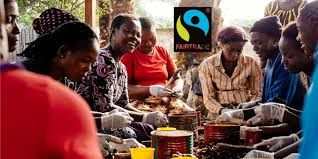

Die Stadt Hildesheim engagiert sich für fairen und regionalen Handel und hat dafür vom Verein Transfair im September 2017 das Siegel „Fairtrade-Town“ erhalten! Das Siegel wird von dem Verein "TransFair" vergeben, welcher eine unabhängige Initiative zur Förderung des Fairen Handels ist.
Bäuerinnen und Bauern, Arbeiterinnen und Arbeiter auf der ganzen Welt sorgen dafür, dass wir in Supermärkten täglich ein umfangreiches Lebensmittelangebot vorfinden. Sie tragen nach wie vor zu 70 Prozent der Nahrungsmittelversorgung weltweit bei. Landwirtschaft ist die bedeutendste Einkommens- und Beschäftigungsquelle für arme Haushalte in ländlichen Gebieten, 40 Prozent der gegenwärtigen Weltbevölkerung bestreitet aus ihr ihren Lebensunterhalt.
Fairtrade verbindet Konsumentinnen und Konsumenten, Unternehmen und Produzentenorganisationen und verändert Handel(n) durch bessere Preise für Kleinbauernfamilien, sowie menschenwürdige Arbeitsbedingungen für Beschäftigte auf Plantagen in Entwicklungs- und Schwellenländern.
Fairtrade ermöglicht es Produzentinnen und Produzenten aus Afrika, Asien und Lateinamerika, zu einer einflussreichen Kraft für Veränderungen in ihrem Umfeld zu werden und selbstbestimmt ihre Zukunft zu gestalten. So ermöglicht die Zahlung der Fairtrade-Prämie für Soziales, Infrastruktur und Bildung beispielsweise den Bau von Schulen und Gesundheitszentren.
Umweltschonende Anbaumethoden werden besonders gefördert und Bioaufschläge bezahlt.